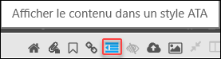
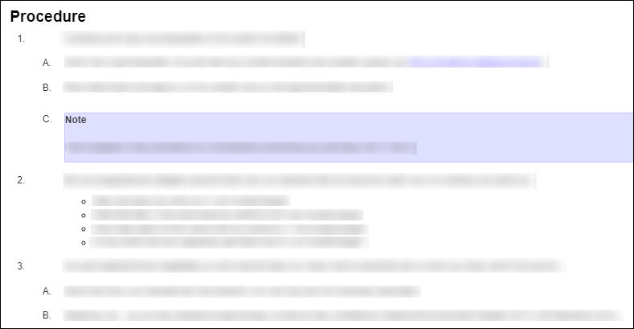

L'icône Afficher le contenu dans un style ATA vous permet de voir la structure de la procédure dans le style ATA ou au format S1000D.
Remarque : La fonction d'affichage du contenu est activée lorsque la case est cochée pour le manuel
d'activation de la vue S1000D dans le style ATA? dans le volet
Configuration.
Remarque : Cette icône n'est visible que pour les publications S1000D.
Dans le volet Contenu, vous verrez un contenu d'affichage dans l'icône
un style ATA. Voir la figure qui suit:

Afficher le contenu dans l'icône et la déclaration de style ATA
Lorsque vous cliquez sur l'icône Afficher le contenu dans un style
ATA, le format passe du style ATA au style S1000D. Voir les chiffres qui
suivent:

Exemple de format de style ATA

Exemple de format de style S1000D